릴리 도트·3D·AnimGen 비교
AnimGen은 별도 Unreal 시험본에 적용했습니다. 재연결 좌표 오류를 수정하고 다시 촬영했으며, 남은 모델 변형·바닥·무기 연결 문제는 검수 중입니다. 본편에는 반영하지 않았습니다.
정지 화면입니다. 재생하면 각 자료의 본래 시간대로 움직입니다.
AnimGen 적용 시험
Unreal 적용 확인 · 5.5초 기록
재연결 좌표 수정본 · 품질 미통과

그림을 불러오지 못했습니다. 아래 실제 기록 파일을 확인해 주세요.


도트 걷기 후보
PixelLab 생성 · Aseprite 손질 · 남동 8장 / 1.6초

그림을 불러오지 못했습니다. 아래 원본 파일을 확인해 주세요.


기존 SD 3D 원본
AnimGen 미적용 · 원본 31장 / 약 1.033초

그림을 불러오지 못했습니다. 아래 원본 파일을 확인해 주세요.


화면 재생은 색 손실 없는 APNG입니다. GIF는 256색 형식이라 색상·세부 표현에 차이가 있습니다. AnimGen 자료는 이동·방향 전환·정지 입력을 포함한 5.5초 기록을 반복하며, 완성된 전진 걷기 루프가 아닙니다. 화면 폭에 따라 축소되어 보일 수 있습니다. 적용 전 두 기준의 정지 화면 보기

이 비교에서 확인할 수 있는 것과 한계
기존 도트·3D는 적용 전 기준이고, 첫 번째 자료는 실제 AnimGen 적용 후의 재연결 검수 출력입니다. Unreal 5.8.4의 공식 예제 동작을 릴리에 리타깃·반출하고 원본 모델·재질로 재연결한 자료이며, 엔진 직접 재생 캡처는 별도 링크에 있습니다. 본 전장 반입이나 릴리 전용 신경망 학습 완료를 뜻하지 않습니다.
- 도트·기존 3D 기준의 표시 키 중앙값은 220.5px입니다. AnimGen은 같은 원본 모델과 카메라 배율을 사용하며 자세에 따라 보이는 높이가 달라집니다. 체형·머리 비율은 서로 다르고 카메라 24°는 비교용 추정값입니다. 같은 동작·보행 위상을 맞춘 우열 시험은 아닙니다.
- 각 자료의 본래 시간을 유지합니다. 도트는 1.6초, 기존 3D는 약 1.033초 주기이며 새 AnimGen 기록은 5.5초입니다. AnimGen의 60fps 전 331표본을 계측했고, 화면 비교는 30fps 165장으로 5.5초를 재생합니다. 기록 끝에서 시작으로 돌아가는 연결은 완성된 걷기 루프의 이음이 아닙니다.
- 기존 3D에는 걷기 발의 바닥 관통, 대기 발 뜸, 손·무기의 위팔 고정과 목걸이 변형 문제가 남아 있습니다. 원본을 줄이거나 이 결함을 숨기지 않았습니다.
- 움직이는 루트의 고정 좌표 기준을 수정한 뒤 331표본의 12관절 거리 회귀 검사를 통과했습니다. 다시 촬영한 결과에도 신규 늘어남·눌림과 기준 바닥면 아래 몸체 정점이 남아 있습니다. 좌표 오류 해결을 모델 품질 통과나 AnimGen의 최종 우열 판정으로 확대하지 않습니다.
- 도트는 현재 남동 걷기 후보만 있습니다. 다른 방향·공격 동작과 본 전장 반입은 완료되지 않았습니다.
- 실제 적용·반출·재사용은 확인했지만 전체 시각 검수, 결함 수정, 모바일 성능과 최종 아트 품질은 통과 전입니다. 게임 코드·기존 저장·도트 본편 방향은 바꾸지 않았습니다.
캐릭터 시트 기반 릴리 3D 시험본
2026.10.26 · 정상 비율 · 검·방패 없음 · 원본 보존, 별도 사본의 기본 걷기 시험
새 캐릭터 시트의 정면·양옆·뒷면을 입력하여 생성한 별도 후보입니다. 원본의 실제 정지 사진과 승인된 별도 사본의 걷기 시험을 함께 확인할 수 있습니다. 기존 원화 비율 후보나 본편을 교체한 결과는 아닙니다.

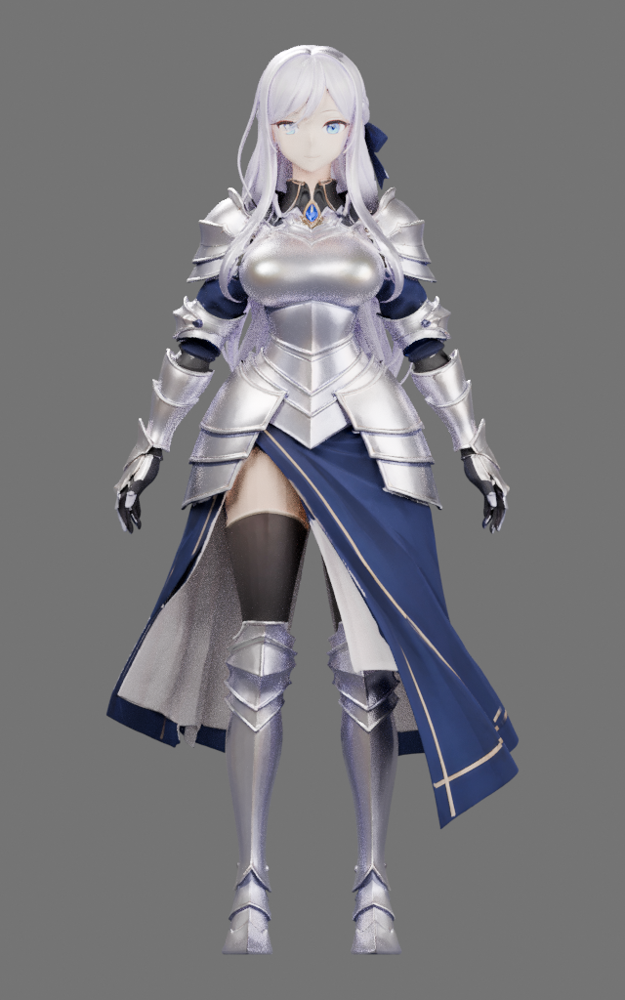
정면 사진을 불러오는 중입니다.
정면 사진을 불러오지 못했습니다. 사진 링크에서 원본을 확인해 주세요.
정면 · 새 시트 기반
원본 모델의 형상과 텍스처를 줄이지 않고 촬영했습니다. 원본은 1,911,906삼각형이며 기본색은 8K, 금속·거칠기·법선 텍스처는 각각 4K입니다.

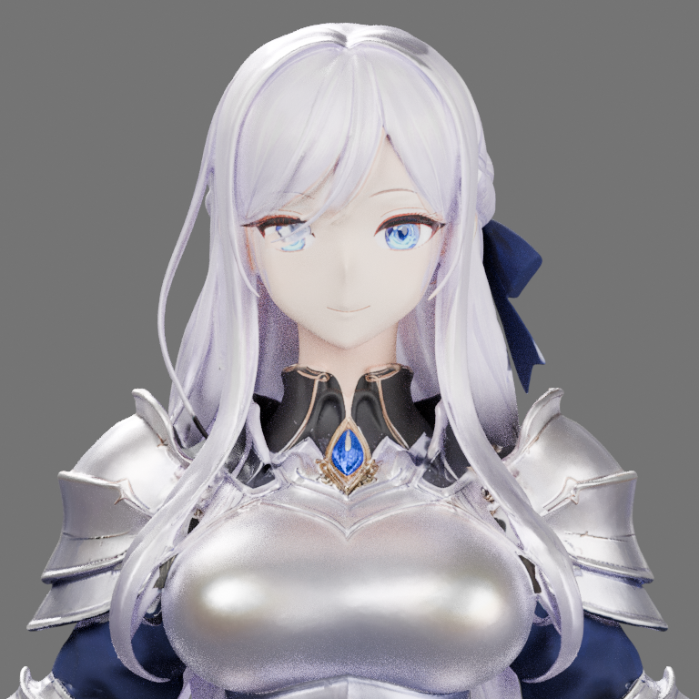
얼굴 사진을 불러오는 중입니다.
얼굴 사진을 불러오지 못했습니다. 사진 링크에서 원본을 확인해 주세요.
얼굴 확대 · 오른쪽 눈 수정 필요
화면 왼쪽 눈의 홍채 일부가 하얗게 뭉개져 보입니다. 형상·텍스처·재질 중 원인은 아직 분리 검증하지 않았습니다.

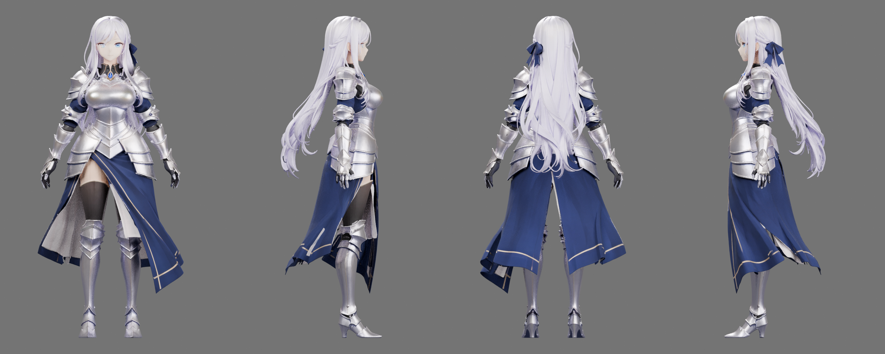
사방 비교판을 불러오는 중입니다.
사방 비교판을 불러오지 못했습니다. 사진 링크에서 원본을 확인해 주세요.
사방 보기
왼쪽부터 정면·캐릭터 오른쪽·뒷면·캐릭터 왼쪽입니다. 머리카락의 옆면 볼륨과 뒤로 벌어지는 형태가 입력 시트와 다르며, 치맛단과 겹친 천 경계에도 거친 형상이 남아 있습니다.
원본 정지 사진은 외형 확인용 64표본 촬영으로 미세한 노이즈가 있습니다. 원본에는 뼈대와 동작을 추가하지 않았습니다. 기존 모델·도트·게임 본편은 유지하고, 원본 3D 파일과 내부 기록은 공개하지 않습니다.

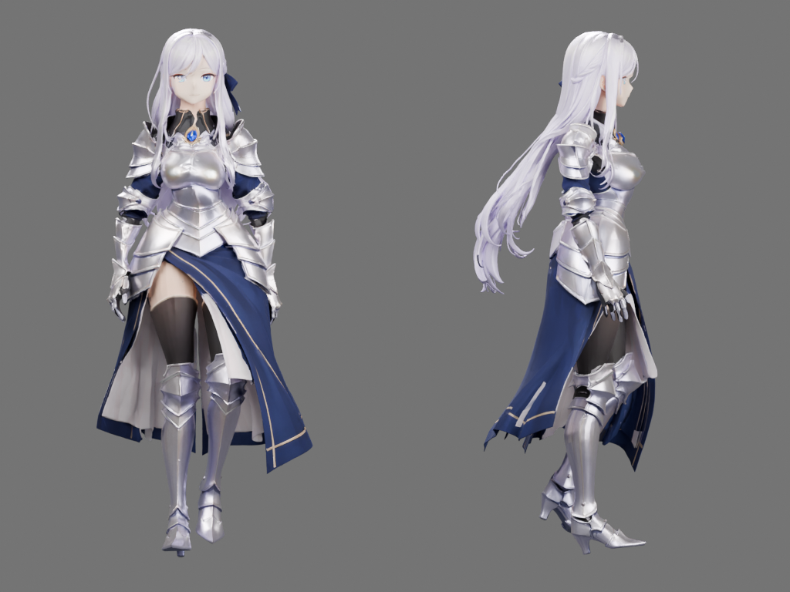
걷기 정지 사진을 불러오는 중입니다.
걷기 정지 사진을 불러오지 못했습니다. 아래 재생 링크에서 확인해 주세요.
기본 걷기 시험 · 품질 미통과
원본을 보존하고 승인된 30만 삼각형 목표의 별도 사본에 자동 리깅과 기본 걷기를 적용했습니다. 실제 사본은 307,462삼각형입니다. 사진이나 아래 링크를 누르면 정면·옆면을 함께 재생합니다.
실제 걷기 파일의 전 32개 시간 표본을 촬영했고, 반복 끝의 중복 자세 1장을 제외한 31장으로 약 1.033초를 재생합니다. 재생 속도는 30fps이며 게임 실행 성능을 측정한 값이 아닙니다. 자동 재생하지 않고 링크를 열 때만 움직이는 그림을 불러옵니다.
걷기는 재생되지만 가슴·옆구리 갑옷이 찌그러지고 긴 옷이 다리를 따라 당겨집니다. 정지 자세의 바닥 기준보다 발 높이도 올라가 있어 접지를 더 손봐야 합니다. 눈의 흰 얼룩도 남아 있습니다. 본편 채택이나 동작 품질 통과가 아닙니다.

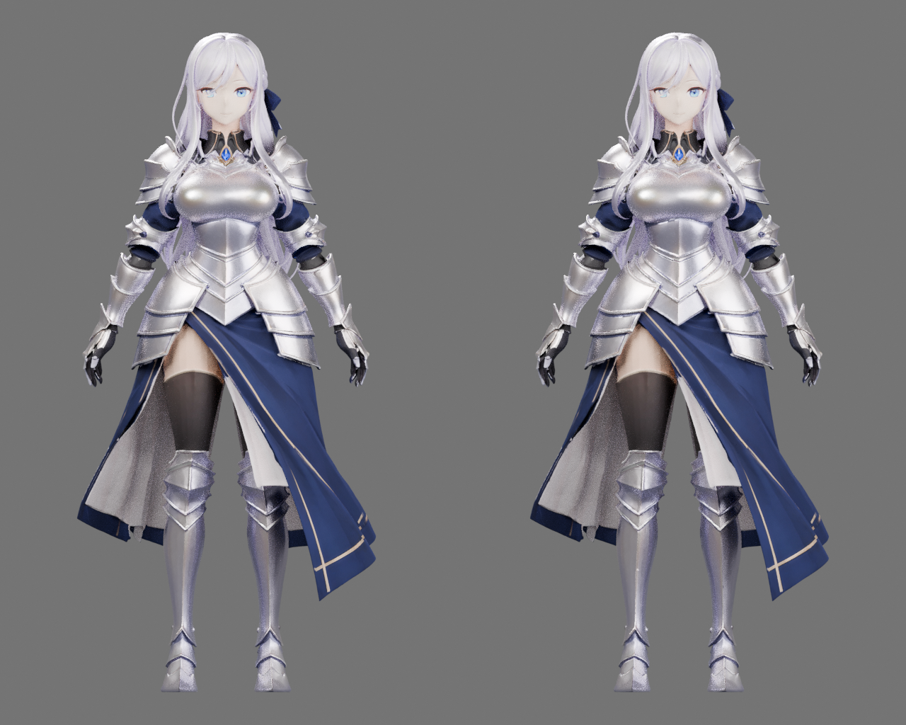
정면 비교판을 불러오는 중입니다.
정면 비교판을 불러오지 못했습니다. 사진 링크에서 확인해 주세요.
원본·사본 정면 비교
왼쪽은 1,911,906삼각형 원본, 오른쪽은 307,462삼각형 사본입니다. 같은 촬영 설정으로 각 모델을 화면에 맞췄으며, 걷기 전 외형 비교입니다.

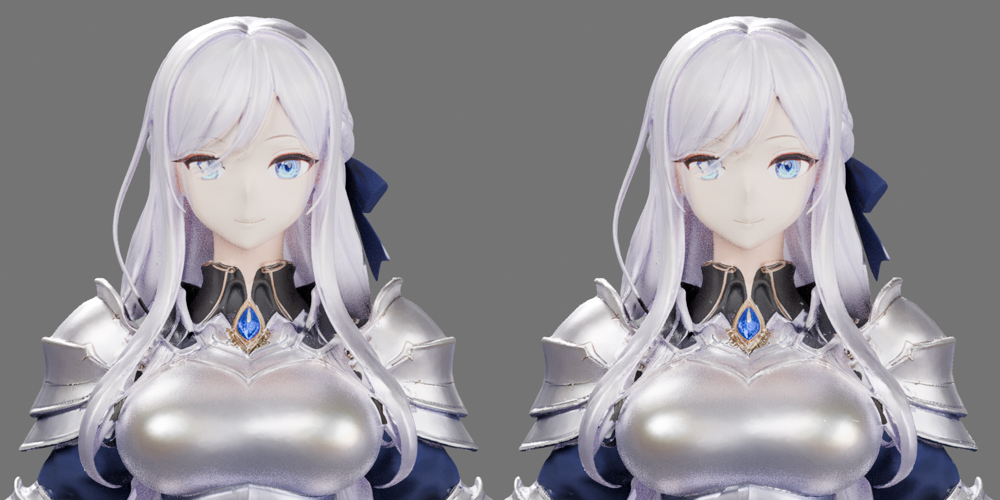
얼굴 비교판을 불러오는 중입니다.
얼굴 비교판을 불러오지 못했습니다. 사진 링크에서 확인해 주세요.
원본·사본 얼굴 비교
기본색 8K와 PBR 4K 이미지는 유지했습니다. 눈의 흰 얼룩은 원본과 사본 모두에 남아 있으며 이번 걷기 시험에서 수정하지 않았습니다.

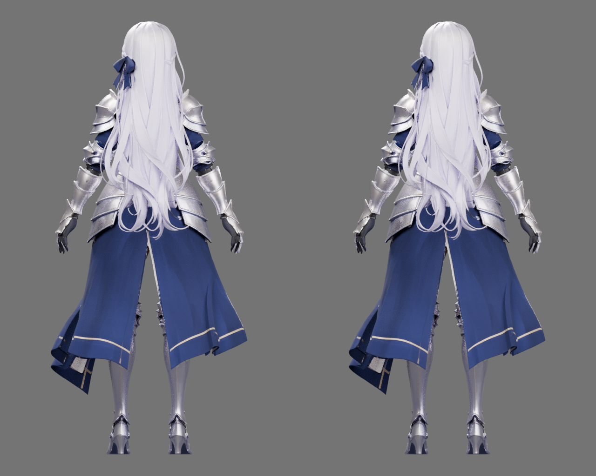
뒷면 비교판을 불러오는 중입니다.
뒷면 비교판을 불러오지 못했습니다. 사진 링크에서 확인해 주세요.
원본·사본 뒷면 비교
뒤머리와 치맛단의 실제 형상을 비교하는 사진입니다. 면 수를 줄인 사본이 만들어졌다는 이유로 아트 품질을 통과시키지 않았습니다.
걷기 시험에서 확인한 것과 남은 검사
실제 모델의 307,462삼각형을 대상으로 32개 시간 표본을 계측했습니다. 정지 자세에 비해 변 길이가 1.5배를 넘거나 0.5배 아래로 줄어든 삼각형은 전체 동작에서 13,156개였습니다. 작은 면의 영향도 포함한 경계 검사이며, 이 수치를 부위별 품질 판정으로 대체하지 않습니다.
정면·옆면 촬영과 브라우저 재생을 확인했습니다. 실제 게임 엔진 재생, 이동·충돌 규칙, 독립 QA와 모바일 성능은 미검증입니다. 추가 유료 동작 생성이나 게임 반영은 하지 않았습니다.
릴리 원화 비율 3D 후보
별도 비SD 후보 1개 · 실제 모델 촬영 · 스킨 계산 확인, 반출·동작 미완료
승인 원화의 은발·파란 눈·갑옷·검·방패를 기준으로 Meshy에서 생성한 모델입니다. 2,110,258삼각형 원본과 기본색 8K·금속/거칠기 4K·노멀 4K 이미지를 줄이지 않고 불러와 촬영했습니다. 아래는 정지 외형 비교이며 게임 전환이나 최종 채택이 아닙니다.

정면 사진을 불러오지 못했습니다. 사진 링크에서 원본을 확인해 주세요.
정면 · 기본색
얼굴·머리카락·갑옷의 세부 표현을 보는 촬영입니다. 이 자세 자체가 대기 애니메이션은 아닙니다.

재질 비교 사진을 불러오지 못했습니다. 사진 링크에서 원본을 확인해 주세요.
사선 · 광원과 재질
가져온 PBR 재질을 사용한 별도 촬영입니다. 기본색 보기와 조명·셰이더가 다르며 본게임 화면은 아닙니다.

옆모습 사진을 불러오지 못했습니다. 사진 링크에서 원본을 확인해 주세요.
옆모습 · 겹침 확인
방패·망토·머리카락의 겹침과 실제 연결 구조를 검수해야 합니다. 리깅과 움직임이 해결됐다는 뜻은 아닙니다.

뒷모습 사진을 불러오지 못했습니다. 사진 링크에서 원본을 확인해 주세요.
뒷모습 · 수정 필요
뒤머리의 금색·피부색 조각과 표면 끊김이 검수 대상입니다. 앞면이 보인다는 이유로 뒷면 품질을 통과시키지 않았습니다.

표시 크기 비교판을 불러오지 못했습니다. 그림 링크에서 원본을 확인해 주세요.
SD와 표시 크기 비교
왼쪽은 기존 SD 대기, 가운데는 새 후보 기본색, 오른쪽은 새 후보 PBR입니다. 같은 표시 키 목표에서는 원화 비율의 얼굴이 더 작게 읽힙니다. 2배 비교판 크게 보기

관절만 움직여 본 결과 · 품질 미통과
새 스킨에서 팔꿈치·손목·무릎·목 6사례를 정면과 옆면으로 촬영했습니다. 아래는 같은 카메라의 실제 진단 사진이며 대기·걷기 애니메이션이나 AnimGen 적용 결과가 아닙니다.

기준 자세 사진을 불러오지 못했습니다. 사진 링크에서 원본을 확인해 주세요.
기준 자세 · 옆면
변형 전 비교 기준입니다. 뒤머리의 얼룩 같은 표면 표현은 생성 원본부터 남아 있습니다.

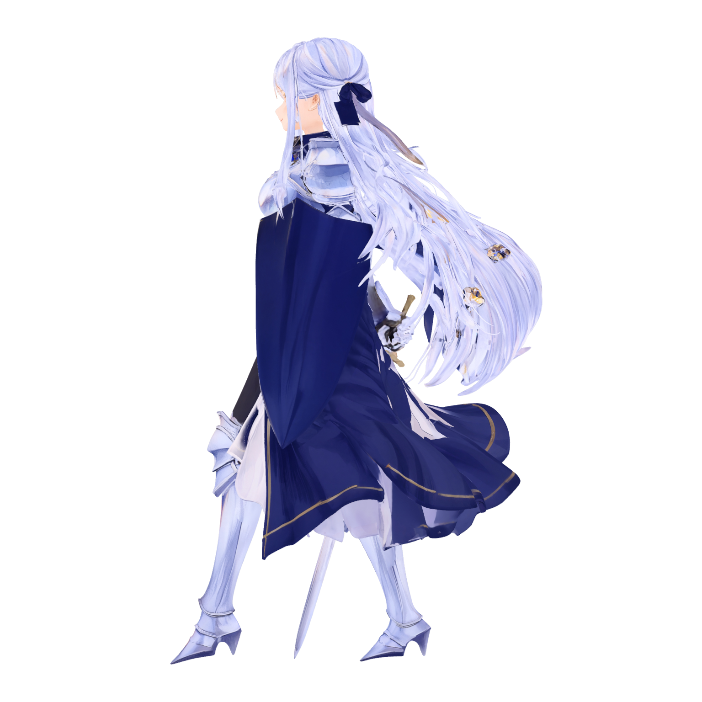
관절 진단 사진을 불러오지 못했습니다. 사진 링크에서 원본을 확인해 주세요.
오른 팔꿈치 20° · 옆면
팔꿈치만 조작했는데 긴 머리와 등 뒤 천이 함께 당겨집니다. 가중치는 더 손봐야 하고 부위 분리 필요성은 추가 확인 대상입니다. 반출 파일이 만들어졌다는 이유로 동작 품질을 통과시키지 않았습니다.
비교 조건과 아직 확인하지 않은 것
24° 카메라와 220.5px 표시 키는 시험 조건입니다. 기존 SD는 몸 메시의 걷기 중앙값, 새 후보는 무기를 포함한 정지 메시 전체를 기준으로 맞췄으므로 자세·맞춤 정의가 완전히 같지는 않습니다. 생성 원본과 재질도 달라 체형만 바꾼 통제 비교가 아니며, 물리적 키나 게임 스프라이트 해상도를 확정한 것이 아닙니다.
생성 원본에는 리그와 동작이 없습니다. 별도 사본의 스킨과 FBX 반출은 원형·UV·노멀·텍스처·가중치 보존 검사를 통과했지만, 관절 진단에서 추가 변형 문제가 확인됐습니다. Unreal에 새 메시·뼈대 파일을 만들었으며 재질·본 영향수의 실효 확인과 새 AnimGen 리타깃은 남아 있습니다. 실제 대기·걷기·전환·손과 장비·바닥·전 프레임 변형, 모바일 성능은 미검증이며 기존 SD·도트 본편·저장은 유지합니다. 원본 3D 파일과 내부 자료는 공개하지 않습니다.
다른 영웅들의 SD 3D 후보
16명 외형 후보 · 원본 GLB 보존 · 뼈대와 동작 없음
실제로 생성한 3D 모델의 사진입니다. 12명은 뷰어의 모델 영역이며, 엘리시스·루네아·아델라·베르카는 GLB를 직접 촬영했습니다. 이 네 사진은 조명 없는 기본색 보기이고, 아래의 ‘시험 조명 사진’은 같은 모델에 고정 광원과 재질을 적용한 결과입니다. 입력 그림을 모델처럼 붙인 자료가 아닙니다. 사진을 누르면 크게 볼 수 있습니다.

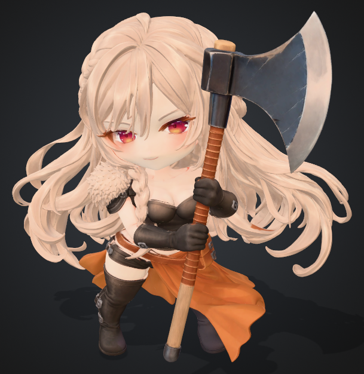
사진 불러오는 중…
사진을 불러오지 못했습니다. 사진 링크에서 원본을 확인해 주세요.
프레야
도끼 자루와 손·몸의 붙음 여부를 추가 확인해야 합니다.

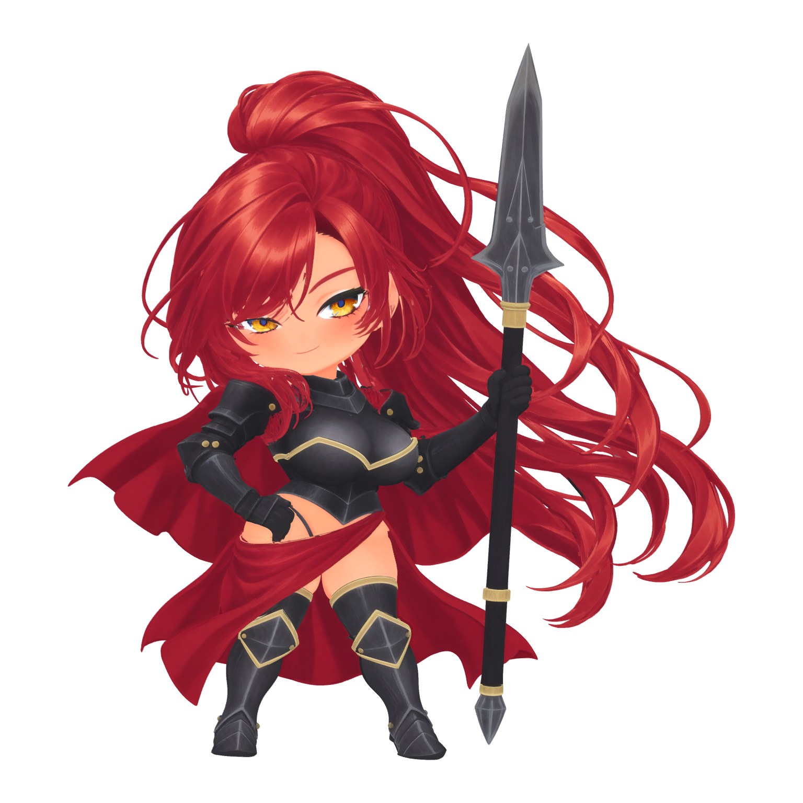
사진 불러오는 중…
사진을 불러오지 못했습니다. 사진 링크에서 원본을 확인해 주세요.
엘리시스 · 홍채 보완
홍채만 호박색으로 바꾼 파생본입니다. 파란 동공과 홍채 가장자리의 청보라색은 남아 있으며 최종 색 검수 통과가 아닙니다.
시험 조명 사진

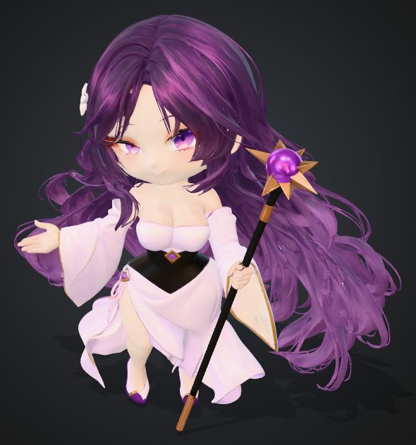
사진 불러오는 중…
사진을 불러오지 못했습니다. 사진 링크에서 원본을 확인해 주세요.
바이올렛
머리 위 어두운 띠와 꽃 장식의 형태를 확인 중입니다.

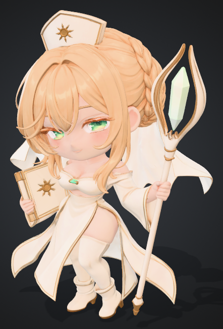
사진 불러오는 중…
사진을 불러오지 못했습니다. 사진 링크에서 원본을 확인해 주세요.
세리엘
성서와 지팡이를 유지한 앞모습입니다. 뒤와 관절 변형은 미검증입니다.

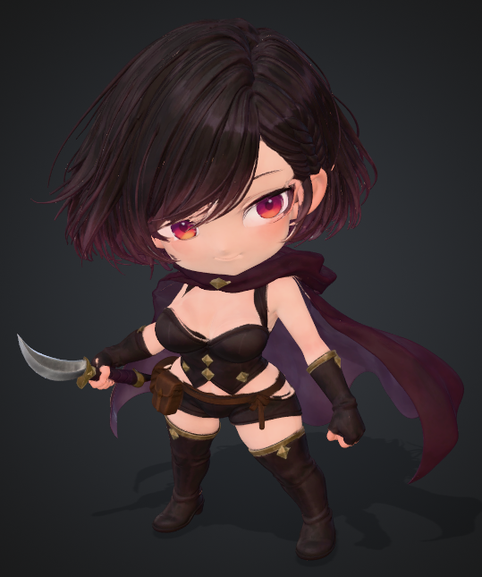
사진 불러오는 중…
사진을 불러오지 못했습니다. 사진 링크에서 원본을 확인해 주세요.
로즈
단검 한 자루와 망토를 확인한 앞모습입니다. 조명 아래 색 차이를 구분해 보고 있습니다.

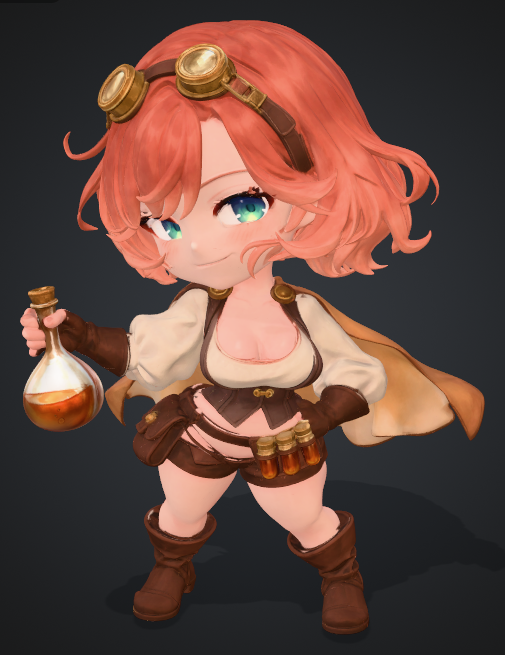
사진 불러오는 중…
사진을 불러오지 못했습니다. 사진 링크에서 원본을 확인해 주세요.
엠버
허리·가슴의 텍스처 경계와 머리색의 광원 차이를 확인 중입니다.

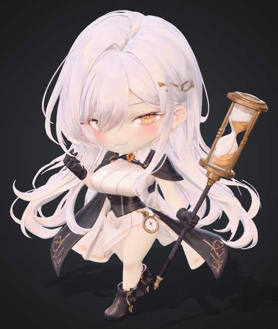
사진 불러오는 중…
사진을 불러오지 못했습니다. 사진 링크에서 원본을 확인해 주세요.
에일린
시곗바늘 머리핀의 형태 손실과 지팡이·옷자락의 겹침을 확인 중입니다.

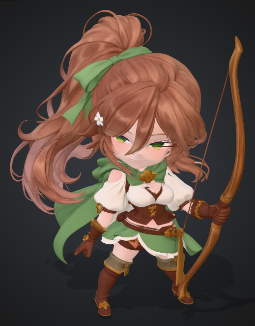
사진 불러오는 중…
사진을 불러오지 못했습니다. 사진 링크에서 원본을 확인해 주세요.
레나
앞머리의 얼굴 가림과 활 아래 끝·부츠의 접촉을 확인 중입니다.

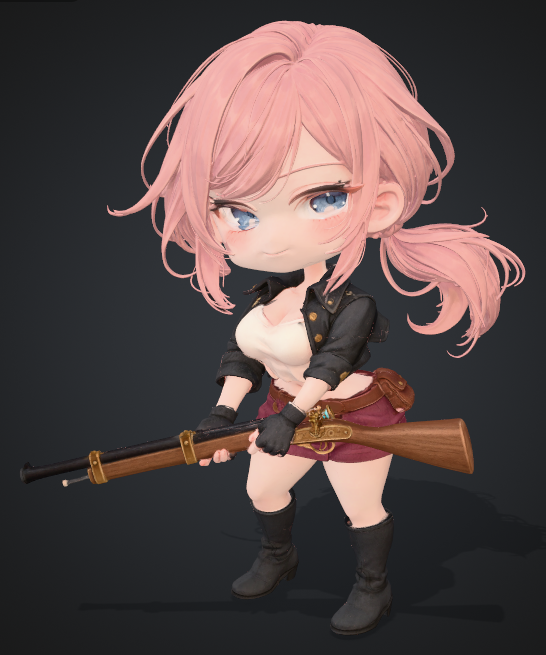
사진 불러오는 중…
사진을 불러오지 못했습니다. 사진 링크에서 원본을 확인해 주세요.
클로에
장총과 허리·허벅지가 붙어 있는지 추가 확인해야 합니다.

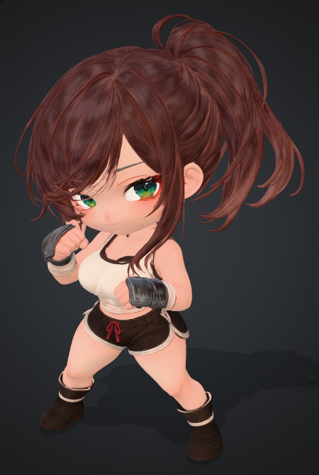
사진 불러오는 중…
사진을 불러오지 못했습니다. 사진 링크에서 원본을 확인해 주세요.
카야
붕대와 너클 보호구를 확인한 앞모습입니다. 주먹·턱의 겹침은 미확인입니다.

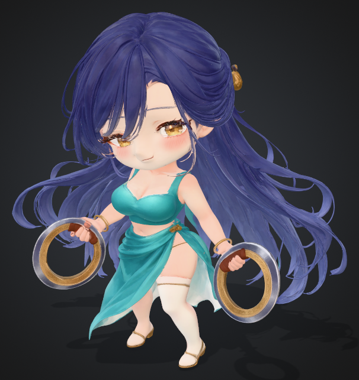
사진 불러오는 중…
사진을 불러오지 못했습니다. 사진 링크에서 원본을 확인해 주세요.
사피라
차크람 두 개의 고리를 확인했습니다. 머리카락과 장비의 실제 분리는 미확인입니다.

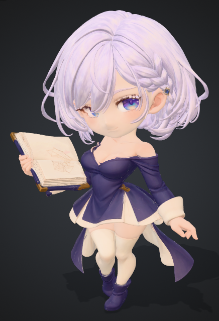
사진 불러오는 중…
사진을 불러오지 못했습니다. 사진 링크에서 원본을 확인해 주세요.
아리스
왼눈과 목선 경계, 책 모서리·허리의 접촉을 확인 중입니다. 백랑 제작은 포함하지 않았습니다.

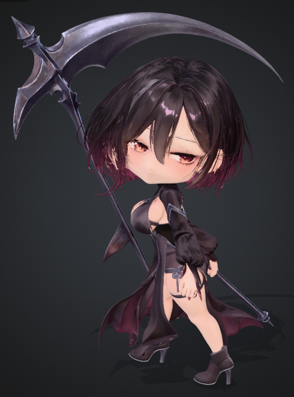
사진 불러오는 중…
사진을 불러오지 못했습니다. 사진 링크에서 원본을 확인해 주세요.
달리아
앞머리의 붉은 포인트와 몸 뒤를 지나는 낫 자루의 연속성을 확인 중입니다.

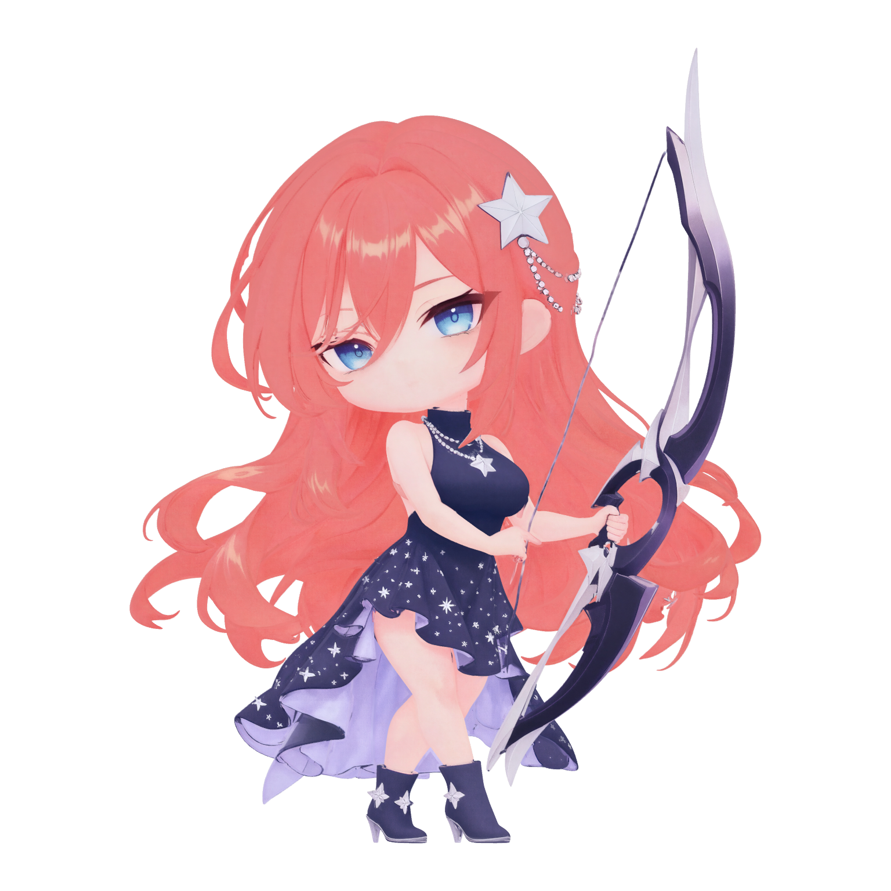
사진 불러오는 중…
사진을 불러오지 못했습니다. 사진 링크에서 원본을 확인해 주세요.
루네아
최신 사용자 참조를 적용했습니다. 기본색에서는 입 선이 약하며, 조명 적용 시 얼굴 음영이 크게 달라집니다. 활·머리카락·옷의 실제 접촉은 미확인입니다.
시험 조명 사진

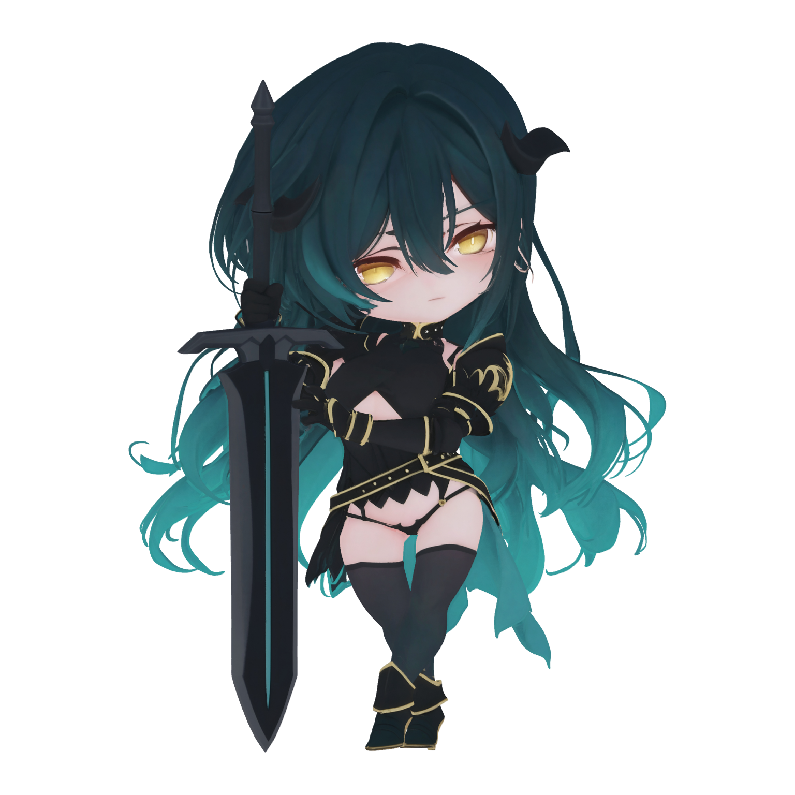
사진 불러오는 중…
사진을 불러오지 못했습니다. 사진 링크에서 원본을 확인해 주세요.
아델라
검 중앙의 청록과 칼날은 기본색에서도 기존 SD보다 어둡습니다. 칼날 옆을 짚는 왼손의 자세가 남았으며 실제 접촉 형상은 미확인입니다.
시험 조명 사진

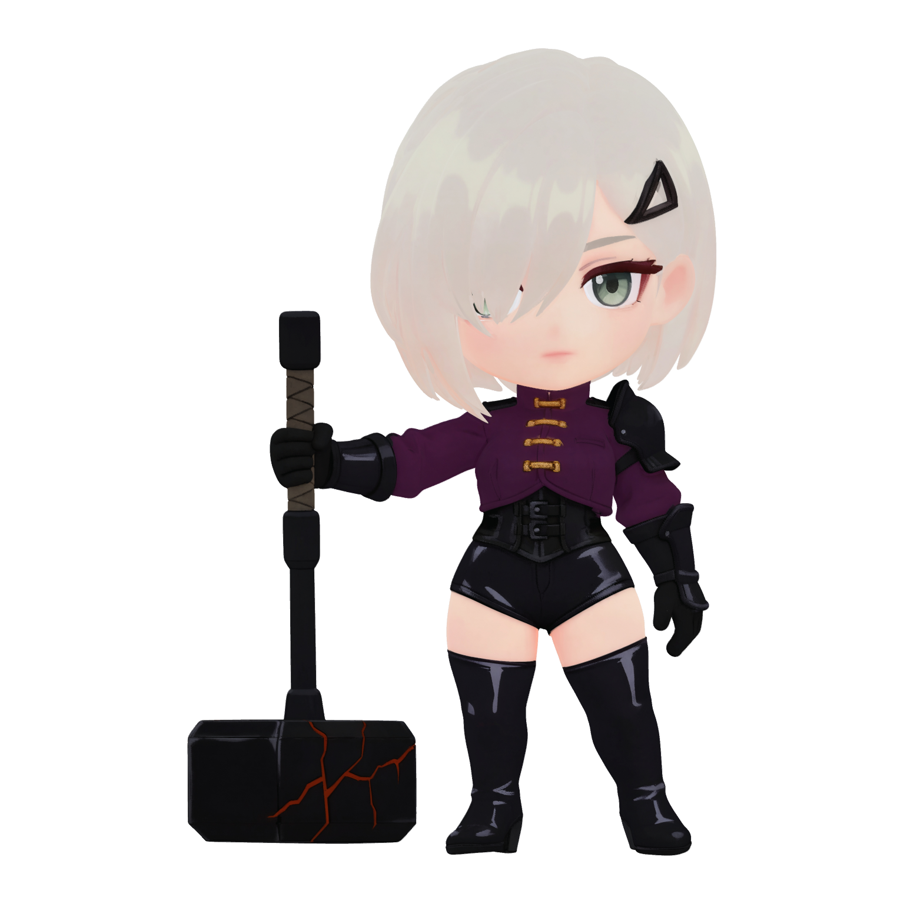
사진 불러오는 중…
사진을 불러오지 못했습니다. 사진 링크에서 원본을 확인해 주세요.
베르카 · 외형만
눈과 망치 균열색이 원화보다 어둡고 발광은 없습니다. 부츠와 망치의 깊이 방향 간격은 미확인입니다. 게임 편입·스킬·성능은 미확정입니다.
시험 조명 사진
네 GLB 후보는 같은 촬영 규약으로 정면·사선을 확인했지만, 뷰어 사진과 카메라·광원·화면 크기가 같지는 않습니다. 생성 원본의 기본색은 8K, 금속/거칠기와 노멀은 각각 4K이며 원본 모델을 줄이지 않았습니다. 뒷면·리깅·동작·전 방향 변형·최종 품질·본 전장 반입은 미검증입니다.
실제 Godot 게임 화면
전투·영토는 10월22일, 환경 설정은 10월25일 실행 화면입니다.
실제 타이틀에서 4인 캠프·정비·장비·영토를 거쳐 첫 층으로 들어간 화면과 새 환경 설정 화면입니다. 전장·배경은 기능 검증용 표현이며, 위의 새 아트 후보가 본 전장에 적용됐다는 뜻은 아닙니다.

전투 화면을 불러오지 못했습니다. 그림 링크에서 원본을 확인해 주세요.
탑 탐험·전투
1층 진입 화면입니다. 캡처 당시 앱 비활성화로 정지된 상태이며, 연결된 방·복도와 파티·물자·스킬 표시를 확인할 수 있습니다.

영토 화면을 불러오지 못했습니다. 그림 링크에서 원본을 확인해 주세요.
영토·외곽 운영
본부·농장·점유 구역과 건설·일손·외곽 토벌 연결입니다. 화면의 수치는 조정 가능한 시험값입니다.

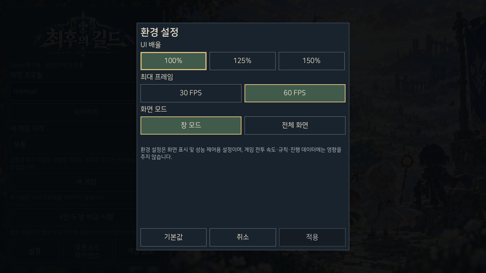
실제 설정 화면을 불러오는 중입니다.
환경 설정 화면을 불러오지 못했습니다. 그림 링크에서 원본을 확인해 주세요.
환경 설정
타이틀과 전투 메뉴에서 열 수 있습니다. 적용 전 선택은 초안이며, 설정은 게임 진행과 따로 저장합니다. 전투 중 닫아도 자동 재개하지 않습니다.
실행 검증 범위 보기
- 2026.10.22 최종 기능 4,757검사와 복구 26,402검사는 실패 0이며 실제 렌더 64프레임을 확인했습니다.
- 별도 4인 시험에서 1~10층 연속 진행, 5층 예고·10층 장치, 다른 프로세스의 저장 재개를 확인했습니다. 본 이야기의 합류 완료나 100층 제작 완료를 뜻하지 않습니다.
- 전투·영토 사진은 실제 장면 버튼 신호로 타이틀·캠프·정비·장비·영토·첫 층을 확인한 25항목 실행에서 나온 것입니다. 환경 설정 사진은 실제 렌더와 엔진 내부 입력 검사에서 나왔습니다. 물리 키·마우스 및 모바일 실기기 시험과 구분합니다.
- 2026.10.24 별도 Godot 스프라이트 검수 화면에서는 입력·프레임 18항목과 실제 재생·정지·0.5/1/2배 표시를 확인했습니다. 본 전장 반입 검증은 아닙니다.
- 환경 설정의 초안·취소·적용, 전투 정지·입력 차단, 다른 프로세스의 저장 복구와 작성자 충돌 차단·잠금 해제 후 재획득을 확인했습니다. 프레임 제한 설정은 해당 성능 달성이나 모바일 성능 검증을 뜻하지 않습니다.
역할별 작업현황
기존 게임 기능과 새 환경 설정, 별도 AnimGen 적용·검수와 아트 후보 제작을 구분해 기록합니다.
- 총괄
- 기능 통합본·기존 진행을 보존하고 현재 작업물과 한계를 정리합니다. 홈페이지에 실제 사진과 재생 자료를 직접 게시합니다.
- 기술 검토·통합
- 별도 Unreal 5.8.4 사본에서 공식 예제 동작의 릴리 리타깃·반출·재생을 확인했습니다. 재연결 좌표 오류 수정과 실제 회귀 검사를 마쳤으며 기존 가중치 결함과 새 원화 비율 후보의 원본 유지 리깅을 별도로 다룹니다.
- 개발 A
- 공통 전투·물자 시계·저장/복구·치료/보급·승급·장비/경매·각성·보스·영토/외곽 기능을 연결했습니다. 새 환경 설정은 기존 저장 규약을 재사용하되 게임 진행과 분리했습니다. 정상 이야기의 보류 경계는 유지합니다.
- 개발 B
- PC·터치 명령과 실제 장면, 이동·예약·캠프·장비·결과 화면을 연결했습니다. 타이틀·전투 메뉴의 환경 설정에서 표시 배율·프레임 제한·PC 창 모드를 바꿀 수 있으며 초안/취소/적용과 전장 입력 차단을 연결했습니다.
- UI 전담
- 초상·HP·스킬·미니맵·각성/효과·영토 패널과 가로/세로 표시를 구현했습니다. 기능 UI와 최종 도트 아트·모바일 실기기 품질은 구분합니다.
- 게임디자인·UX
- 전투와 치료·자원·성장·보스·영토 정책을 대조했습니다. 시험 수치를 최종 균형으로 확정하지 않으며 체인·큰 연출 등의 후속 경계를 유지합니다.
- 레벨디자인
- 연결된 1~10층, 5층 공격 예고·10층 장치, 영토·외곽 자료를 구성했습니다. 실제 10층 연속 진행을 확인했고 최종 배경·재미·균형 검증은 남아 있습니다.
- 아트
- 릴리 도트·기존 3D·실제 AnimGen 기록과 좌표 수정 촬영을 보존했습니다. 원화 비율 후보의 정지 촬영 24장·비교판 2장과 다른 16명 SD 후보의 원본을 확보했습니다. 세 명은 MCP 생성·회수까지 확인했고, 엘리시스 홍채색은 별도 사본에서 보완했습니다. 실제 모델 표시·뒷면·리깅·동작·최종 품질은 계속 검수하며 정지 후보를 완성된 게임용 아트로 보고하지 않습니다.
- 콘텐츠
- 튜토리얼·합류·회복·운영·화면 문구와 승인된 환경 설정 글을 반영했습니다. 새 오류 상황은 실제 오류를 표시하며 승인된 이야기와 영웅 정체성을 유지하고 미정 내용을 임의 확정하지 않습니다.
- 2D 연출
- 기존 자료를 보존합니다. 큰 각성기·심상영역 연출은 후속 범위이며, 정지 시안이나 현재 걷기 비교를 연출 애니메이션 완성으로 보지 않습니다.
- QA 1차
- 기능·UI·각성·보스·정비·영토 소비 경계를 시험했습니다. 이번 비교 자료의 실제 프레임·주기·원본 대응도 독립 대조하며 모델 최종 품질 통과와 구분합니다.
- QA 2차
- 저장 최초 읽기·명시 저장·옛 전투·소수 잔량·영토·각성·10층 및 다른 프로세스 재개를 검증했습니다. 환경 설정도 별도 프로세스의 작성 충돌·해제 후 재획득과 게임 저장 불변을 확인했습니다. 실제 기기 품질과 새로운 아트의 최종 판정은 별도입니다.
남은 작업과 제외 범위
- 아트·AnimGen: 엔진 적용·재생·반출과 재연결 좌표 오류 수정은 확인했습니다. 기존 SD의 가중치·바닥·무기 자세, 새 원화 비율 후보의 뒷면·리깅·움직임은 검수·수정 대상입니다. 다른 영웅 후보도 원본 보존과 품질 확인을 거치며 최종 채택·본편 반입은 보류합니다.
- 모바일 실기기: Android 산출물과 자료 소비는 확인했지만 휴대폰 설치·터치·성능·실기기 저장은 미검증입니다.
- 이야기: 정상 릴리 시작과 세리엘 합류를 유지합니다. 방어전이 선행하는 레나 합류는 보류하며 다른 기능은 별도 4인 시험과 구분합니다.
- 현재 제외: 성 방어전은 새 기획을 기다리는 동안 구현하지 않습니다. 체인·큰 연출·미채택 기술과 최종 균형을 임의로 완료 처리하지 않습니다.